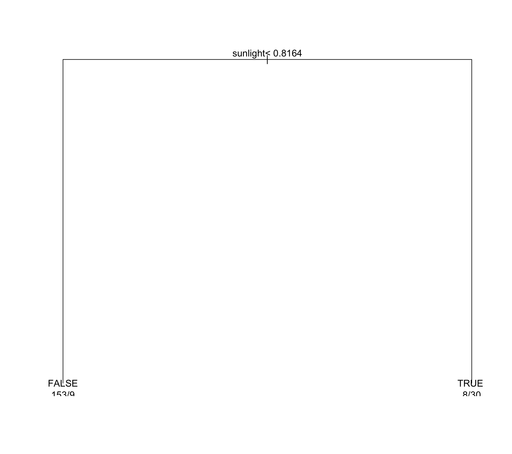
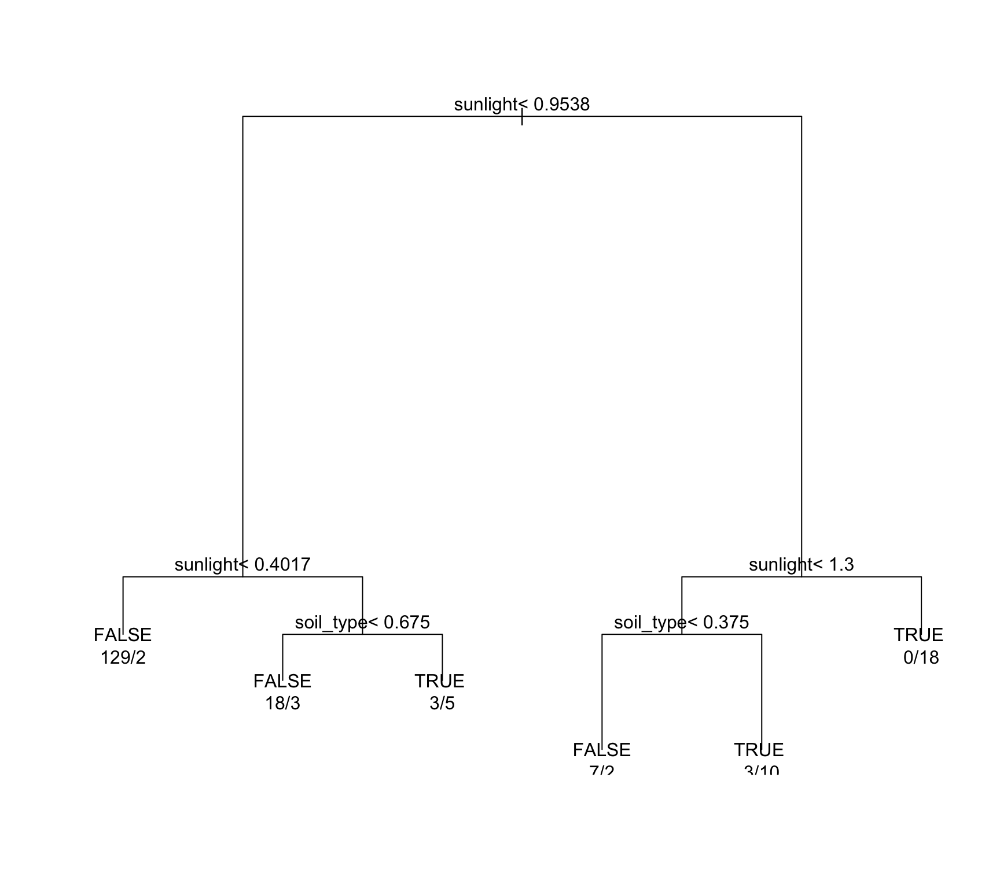

library(caret)
library(party)
library(dplyr)
library(pls)
library(pdp)
library(Cubist)
library(xgboost)
library(randomForest)
options(scipen=999)
library(earth)
library(Formula)
library(plotmo)
library(plotrix)
library(DiagrammeR)
library(AppliedPredictiveModeling)
data(ChemicalManufacturingProcess)Week 12 Trees and Rules
8.1 Simulated Data from Chapter 7
8.1. Recreate the simulated data from Exercise 7.2:
library(mlbench)
set.seed(200)
simulated <- mlbench.friedman1(200, sd = 1)
simulated <- cbind(simulated$x, simulated$y)
simulated <- as.data.frame(simulated)
colnames(simulated)[ncol(simulated)] <- "y"Fit and Estimate
Fit a random forest model to all of the predictors, then estimate the variable importance scores. Did the random forest model significantly use the uninformative predictors (V6 – V10)?
No, quite the opposite. V1, V2 and V4 are the important predictors. V6, V7, V8, V9, and V10 contribute very little when predicting.
model1 <- randomForest(y ~ ., data = simulated,
importance = TRUE,
ntree = 1000)
rfImp1 <- varImp(model1, scale = FALSE)
print(rfImp1) Overall
V1 8.608151977
V2 6.427551579
V3 0.793562571
V4 7.872625387
V5 2.399842693
V6 0.008598025
V7 0.037203805
V8 -0.071849590
V9 -0.053688259
V10 0.025364287Add an Additional Predictor
Now add an additional predictor that is highly correlated with one of the informative predictors. For example: Fit another random forest model to these data. Did the importance score for V1 change? What happens when you add another predictor that is also highly correlated with V1?
It definitely splits the difference between V1 and the new predictor. Beyond that, the rest of the variables are pretty close to what they were before. I suppose that’s why they say random forest can handle collinear data better than other models can.
simulated$duplicate1 <- simulated$V1 + rnorm(200) * .1
cor(simulated$duplicate1, simulated$V1)[1] 0.9419944model2 <- randomForest(y ~ ., data = simulated,
importance = TRUE,
ntree = 1000)
rfImp2 <- varImp(model2, scale = FALSE)
print(rfImp2) Overall
V1 6.24433281
V2 6.55448083
V3 0.61121432
V4 6.87146935
V5 1.97671729
V6 0.14715800
V7 0.02442013
V8 -0.09719199
V9 -0.12151768
V10 -0.07987999
duplicate1 3.34727743Conditional Inference Trees
Use the cforest function in the party package to fit a random forest model using conditional inference trees. The party package function varimp can calculate predictor importance. The conditional argument of that function toggles between the traditional importance measure and the modified version described in Strobl et al. (2007). Do these importances show the same pattern as the traditional random forest model?
Here’s what I found about this test.
- Using a simmple one Mississippi two Mississippi count, I found conditional=TRUE to take about 25X longer that conditional=FALSE
- the two collinear variables V1 and duplicate1 are very much deprioritized..
- Besides those colinear variables, the relative importance seems somewhat similar.
model3 <- cforest(y ~ ., data = simulated, controls=cforest_unbiased(ntree=1000, mtry=2))
rfImp3False <- varimp(model3, conditional=FALSE)
rfImp3False_df <- data.frame(Overall = rfImp3False)
rownames(rfImp3False_df) <- names(rfImp3False)
rfImp3True <- varimp(model3, conditional=TRUE)
rfImp3True_df <- data.frame(Overall = rfImp3True)
rownames(rfImp3True_df) <- names(rfImp3True)
print(rfImp3False_df)
print(rfImp3True_df)Use Boosted and Cubist
Repeat this process with different tree models, such as boosted trees and Cubist. Does the same pattern occur? (refer to figure 8.24)
For both, yes, it’s about the same. V1, V2, V4, V5 and duplicate1 are the more used features.
predictors <- simulated[, !names(simulated) %in% "y"] # This excludes 'y' by name
modelCubist <- cubist(x = predictors, y = simulated$y, committees = 1)
data_matrix <- xgb.DMatrix(
data = as.matrix(simulated[, !names(simulated) %in% "y"]),
label = simulated$y
)
modelXGBoost <- xgboost(data = data_matrix,
max.depth = 6, eta = 0.3, nthread = 2,
nrounds = 100, objective = "reg:squarederror", verbose=0)
importance_matrix <- xgb.importance(
feature_names = colnames(simulated[, !names(simulated) %in% "y"]), model = modelXGBoost)
summary(modelCubist)
Call:
cubist.default(x = predictors, y = simulated$y, committees = 1)
Cubist [Release 2.07 GPL Edition] Sat Apr 13 22:19:25 2024
---------------------------------
Target attribute `outcome'
Read 200 cases (12 attributes) from undefined.data
Model:
Rule 1: [200 cases, mean 14.416183, range 3.55596 to 28.38167, est err 1.944664]
outcome = 0.183529 + 8.9 V4 + 7.9 V1 + 7.1 V2 + 5.3 V5
Evaluation on training data (200 cases):
Average |error| 2.151842
Relative |error| 0.53
Correlation coefficient 0.85
Attribute usage:
Conds Model
100% V1
100% V2
100% V4
100% V5
Time: 0.0 secsprint(importance_matrix) Feature Gain Cover Frequency
<char> <num> <num> <num>
1: V1 0.318668826 0.07037823 0.15933782
2: V2 0.281275067 0.09495117 0.11536472
3: V4 0.242506748 0.10370234 0.10501811
4: V5 0.061052342 0.11306834 0.08949819
5: V3 0.030721950 0.13482329 0.09518883
6: duplicate1 0.028559596 0.07112628 0.06828764
7: V7 0.017198188 0.10078187 0.08639421
8: V10 0.007285918 0.06322563 0.05897569
9: V6 0.006436033 0.07435417 0.07656492
10: V9 0.003896760 0.06137088 0.06621831
11: V8 0.002398572 0.11221782 0.079151588.2 Tree Granularity Bias
Use a simulation to show tree bias with different granularity.
I had difficult time coming up with this until I heard an exmaple that made sense to me. And I’d like to keep this example here in my notes so I can find it later.
Imagine you are trying to decide where to plant different types of plants in a garden based on sunlight and soil type
- Soil type: You have a map that categorizes soil into different types based on its nutrients (granularity varies).
- Sunlight: Varies continuously throughout the garden.
If your map (granularity of X1) is very detailed, you might focus a lot on tiny differences in soil nutrients and miss broader patterns of sunlight (X2). Conversely, if the soil map is very basic, you might pay more attention to sunlight variations. This is analogous to how decision trees might develop biases based on the characteristics of the data they receive.
library(rpart)
set.seed(123) # for reproducibility
show_tree <- function(observations, granularity) {
## Var 1 - different levesl of granularity. If granularity is 10, X1 will have values like 0, 0.1, 0.2, up to 0.9. If granularity is 100, X1 will have values like 0, 0.01, 0.02, up to 0.99, making it much more detailed.
soil_type <- round(runif(observations, 0, 1) * granularity) / granularity
## Var 2, normal distribution data.
sunlight <- rnorm(observations)
Y <- soil_type + sunlight + rnorm(observations, sd=0.5) > 1.5 # Binary outcome
# Fit a decision tree, Y = true or false
data <- data.frame(soil_type, sunlight, Y)
model <- rpart(Y ~ soil_type + sunlight, data=data, method="class")
# Plot the tree
plot(model)
text(model, use.n=TRUE)
}
show_tree(200, 10) # low granularity
show_tree(200, 100) # high granularity
To explain that, the top tree has a single split. The soil_type variable, which has low granularity, is not used at all. The absence of splits on soil_type could suggest a bias towards the more continuous variable (sunlight), as it didn’t find soil_type informative enough due to its coarse categories.
The bottom chart splits on both soil type and sunlight, indicating that the higher granularity of soil_type provided more informative splits. After the initial split, we see splits based on soil_type at soil_type < 0.675 and soil_type < 0.375. These splits are evidence that with more granularity, the soil_type variable becomes informative enough to be used for making decisions. The tree now shows a bias towards using soil_type alongside sunlight, demonstrating that when provided with more detailed categories, the decision tree incorporates soil_type into its model.
8.3 Gradient Boosting
In stochastic gradient boosting, the bagging fraction and learning rate will govern the construction of the trees as they are guided by the gradient. Although the optimal values of these parameters should be obtained through the tuning process, it is helpful to understand how the magnitudes of these parameters affect magnitudes of variable importance. Figure 8.24 provides the variable importance plots for boosting using two extreme values for the bagging fraction (0.1 and 0.9) and the learning rate (0.1 and 0.9) for the solubility data. The left-hand plot has both parameters set to 0.1, and the right-hand plot has both set to 0.9
Why does the model on the right focus its importance on just the first few of predictors, whereas the model on the left spreads importance across more predictors?
This has to do with the bagging fraction. The left has a lower fraction, which means the left was trained on a smaller subset of data. Therefore, it must consider a broad range of predictors to make accurate predictions across the datasets. The one on the right, the algorithm sees mots of the data, which means the model can more reliably find teh right predictors.
After having gone through all this, I only wonder which model is more accurate. I suppose this is another lever we have at our disposal.
Which model do you think would be more predictive of other samples?
According to what I read, the one on the left. It spreads learning across more predictors to learn slowly. The one on the right is a little more fit just to that specific dataset.
How would increasing interaction depth affect the slope of predictor importance for either model in Fig. 8.24?
I think it would impact the one on the left. The one on the right with that .9 is pretty much overfit to that data and not leveraging most of the other features. The column on the left has more room to be impacted.
8.7 More On Chemical Manufacturing
Refer to Exercises 6.3 and 7.5 which describe a chemical manufacturing process. Use the same data imputation, data splitting, and pre-processing steps as before and train several tree-based models
I’ll pull in the last several, and I’ll add in XGBoost.
imputed_data <- preProcess(ChemicalManufacturingProcess, method='medianImpute')
processed_data <- predict(imputed_data, ChemicalManufacturingProcess)
set.seed(123)
splitIndex <- createDataPartition(processed_data$Yield, p = 0.80, list = FALSE)
train_data <- processed_data[splitIndex, ]
test_data <- processed_data[-splitIndex, ]
# KNN
knnModel <- train(Yield ~ ., data = train_data,
method = "knn",
preProcess = c("center", "scale"),
tuneLength = 5)
knnPred <- predict(knnModel, newdata = test_data)
knnMetrics <- postResample(pred = knnPred, obs = test_data$Yield)
# MARS
marsModel <- train(Yield ~ ., data = train_data,
method = "earth",
preProcess = c("center", "scale"),
tuneLength = 5)
marsPred <- predict(marsModel, newdata = test_data)
marsMetrics <- postResample(pred = marsPred, obs = test_data$Yield)
# SVM
svmModel <- train(Yield ~ ., data = train_data,
method = "svmRadial",
preProcess = c("center", "scale"),
tuneLength = 5)
svmPred <- predict(svmModel, newdata = test_data)
svmMetrics <- postResample(pred = svmPred, obs = test_data$Yield)
# Random Forest
rfModel <- train(Yield ~ ., data = train_data,
method = "rf",
preProcess = c("center", "scale"),
tuneLength = 5)
rfPred <- predict(rfModel, newdata = test_data)
rfMetrics <- postResample(pred = rfPred, obs = test_data$Yield)
# Isn't working through caret, will use directly.
params <- list(
booster = "gbtree",
objective = "reg:squarederror",
eta = 0.3,
max_depth = 6
)
dtrain <- xgb.DMatrix(data = as.matrix(train_data[-which(names(train_data) == "Yield")]),
label = train_data$Yield)
# Train the model
xgbModel <- xgb.train(params = params, data = dtrain, nrounds = 100)
# Predict
xgbPred <- predict(xgbModel, as.matrix(test_data[-which(names(test_data) == "Yield")]))
xgbMetrics <- postResample(pred = xgbPred, obs = test_data$Yield)
# Combine model performance metrics
modelPerformance <- data.frame(
RMSE = c(knnMetrics[1], marsMetrics[1], svmMetrics[1], rfMetrics[1], xgbMetrics[1]),
Rsquared = c(knnMetrics[2], marsMetrics[2], svmMetrics[2], rfMetrics[2], xgbMetrics[2]),
MAE = c(knnMetrics[3], marsMetrics[3], svmMetrics[3], rfMetrics[3], xgbMetrics[3]),
row.names = c("KNN", "MARS", "SVM", "RF", "XGBoost")
)
modelPerformance RMSE Rsquared MAE
KNN 1.406333 0.4224466 1.1606875
MARS 1.402311 0.4244340 1.1104190
SVM 1.228647 0.5562600 1.0257624
RF 1.274071 0.5347547 0.9730071
XGBoost 1.028613 0.6809667 0.7879700And the winner is
Which tree-based regression model gives the optimal resampling and test set performance?
Wow, XGBoost with the big win!
Predictors
Which predictors are most important in the optimal tree-based regression model? Do either the biological or process variables dominate the list? How do the top 10 important predictors compare to the top 10 predictors from the optimal linear and nonlinear models?
The variables are mostly the same, but the order is slightly different. You can see there are little differences between which model puts weight on which features.
#XGBoost
importance_matrix <- xgb.importance(feature_names = colnames(dtrain)[!colnames(dtrain) %in% "Yield"], model = xgbModel)
sorted_importance_matrix <- importance_matrix[order(-importance_matrix$Gain),]
important_features <- head(sorted_importance_matrix, 10)
print(important_features) Feature Gain Cover Frequency
<char> <num> <num> <num>
1: ManufacturingProcess32 0.13697775 0.022868585 0.01449275
2: BiologicalMaterial03 0.10386130 0.027716303 0.01630435
3: ManufacturingProcess31 0.09515613 0.006512804 0.00634058
4: ManufacturingProcess17 0.09349432 0.021245653 0.01539855
5: ManufacturingProcess13 0.07765902 0.023711666 0.01811594
6: BiologicalMaterial09 0.05815033 0.040805143 0.02898551
7: BiologicalMaterial12 0.04474019 0.018041943 0.01086957
8: BiologicalMaterial02 0.04312171 0.130677627 0.07065217
9: ManufacturingProcess43 0.03886919 0.015554853 0.02536232
10: ManufacturingProcess22 0.02905526 0.029149542 0.02355072varImp(rfModel)$importance |>
arrange(desc(Overall)) |>
head(10) Overall
ManufacturingProcess32 100.000000
BiologicalMaterial06 23.393929
ManufacturingProcess31 22.215862
BiologicalMaterial03 17.390282
ManufacturingProcess17 16.059163
ManufacturingProcess36 12.152575
ManufacturingProcess13 11.846488
BiologicalMaterial12 11.272931
ManufacturingProcess09 10.606859
BiologicalMaterial11 9.391015Tree Plots
Plot the optimal single tree with the distribution of yield in the terminal nodes. Does this view of the data provide additional knowledge about the biological or process predictors and their relationship with yield?
There are two bits of information that stand out. Firstly, there are only two root nodes that start with ManufacturingProcess32. One uses just that as a decision, the second uses several variables. I figured there would have been a lot more trees with that root as the root node.
Second, BiologicalMaterial03 and ManufacturingProcess31 which are the second and third highest gain variables don’t seem to be in that second tree MFP32 root node tree at all. This learning model learns from itself after multiple tries, but I thought it would be there.
The exact behavior of how this model works is still a little confusing, so added support for Node 0, 1, and 2. And with the same results, those other important features are still not listed.
trees_data <- xgb.model.dt.tree(feature_names = colnames(dtrain), model = xgbModel)
trees_with_ManufacturingProcess32 <- unique(trees_data[Feature == 'ManufacturingProcess32' & (Node == 0 | Node == 1 |Node == 2), "Tree"])
tree_numbers <- trees_with_ManufacturingProcess32$Tree
xgb.plot.tree(model = xgbModel, trees = tree_numbers)